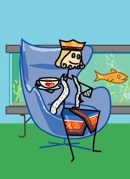

→
Damian Cugley →
Alleged Tarot 2002 →
png →
→
Damian Cugley →
Alleged Tarot 2002 →
png →
| « The Queen of Cups | The Ace of Swords » | |
|  | ||
|
The King of Wands The King of Swords The King of Coins |
||
Upright: a sociable, loving, sensuous man
Reversed: a crafty and hot-tempered man; mislead impression
The chair I have give the King of Cups is (based on) the Egg chair, designed by Arne Jacobsen for the SAS Hotel in 1957–58. It seemed appropriate given its organic shape, which is cup-like but taller and less padded than the Globe (which I used for the Queen), which suits the King. The Egg chair was also used by Dr No in the James Bond film of the same name.
See also Thirteen’s description on the Aeclectic Tarot site
If your browser supports SVG, then you should visit the SVG version of this page. It is so much more cool!